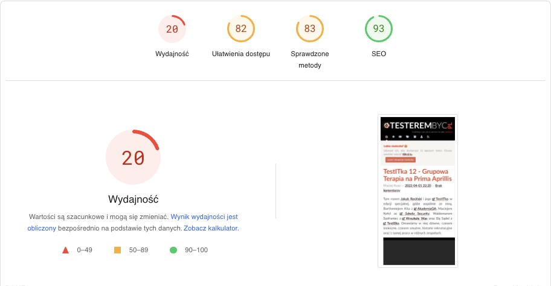

Zmiany na blogu
Wykorzystano zdjęcie autorstwa Nataliya Vaitkevich z Pexels
Tęskniliście za mną? Ja za Wami na pewno, choć nie chowałem się i pojawiałem się u innych (w najbliższym czasie, wszystkie materiały pojawią się tutaj na blogu, ale musicie mi dać chwilkę). Jednak to, że mnie tutaj nie było, nie znaczy, że się nudziłem. Pracowałem nad kilkoma rzeczami i efekt pierwszej z nich właśnie podziwiasz, czytając ten tekst. Jak chcesz poznać, co, jak i dlaczego, to zapraszam do dalszej lektury.
Dlaczego nowy blog? ¶
Zacznijmy od tego, dlaczego w ogóle blog przeszedł transformację i ma nie tylko nowy wygląd, ale i kilka innych zmian, nie do końca widocznych na 1 rzut oka .
Powodów zmiany było kilka, ale można byłoby podsumować je jednym zdaniem: "to ja potrzebowałem zmiany" .
Pewnie dziwisz się, o co chodzi i wcale Ci się nie dziwię. Już wyjaśniam.
Stara wersja bloga była mocno niezoptymalizowana pod wieloma względami i uniemożliwiała zrobienie wielu rzeczy.
Jedną z największych bolączek (z mojego punktu widzenia), był brak odpowiedniej wyszukiwarki w ramach samego bloga, gdyż narzędzie ( Nikola ) po prostu nie ma takiej funkcjonalności. Ratowałem się wtedy, wyszukiwarką Google, które można wpiąć w daną stronę, ale to rozwiązanie jest bardzo niezintegrowane z samą stroną i po prostu wygląda dziwnie.
Sama Nikola miała jeszcze jeden poważny problem, który był powodem mojego lekkiego
zawieszenia się
w kwestii prowadzenia bloga, tzn. zbudowana jest z wykorzystaniem biblioteki
lxml
, która z jakichś powodów nie została dostosowana do nowej rodziny procesorów Apple (tak, używam Maca).
Błędy związane z tymi procesorami
, a dokładniej ich architekturą (
arm64e
, a nie jest inne procesory
x86_64
) powodują, że strony po prostu nie tworzą się poprawnie. Są pewne sposoby obejścia tego problemu, jednak nie są one idealne i często powodują inne problemy lub są zwyczajnie niewygodne (np. budowanie wewnątrz Dockera). Być może nowe wersje biblioteki lxml rozwiążą te problemy, jednak zbyt długo już na to czekałem.
Kolejny problem to użyta skórka która, pomimo że w moim odczuciu była dosyć estetyczna, była niemal zupełnie nieprzystosowana do urządzeń mobilnych, a jej modyfikacja była mocno uciążliwa.
Jeszcze inny problem to kwestie SEO bloga, na które wpływ ma m.in. czas ładowania strony, a który nie zależy bezpośrednio od samego hostingu, a od elementów, które na danej stronie są ładowane (np. Facebook Messanger, z którego prawie nikt nie korzystał).
Jest jeszcze jeden ważny element związany czysto z backendem tego rozwiązania, czyli tworzeniem treści, które również było mocno "kulawe" (poniżej wrócę do tego tematu).
Tak wiem, możesz powiedzieć, że to pierdoły, bo dla Ciebie najważniejsze są treści prezentowane na blogu i przyznam Ci rację, ale ... (jak to mówią, wszystko, co przed "ale" nie ma znaczenia). To ale, to jeszcze moja chęć do tworzenia tych treści, a ona była coraz niższa, gdyż musiałem coraz więcej czasu poświęcać na aspekty, których Ty, czytelnik tego bloga, zupełnie nie widzisz.
No więc, w końcu powiedziałem sobie:
Dość narzekania. Zrób coś z tym.
No i tak znaleźliśmy się oboje w tym miejscu.
Jak nastąpiły zmiany? ¶
Heh. Jak zawsze, zmiany są trudne i często bardzo czasochłonne, ale dają pole do rozwoju. No więc od początku.
Wymagania ¶
Każdy projekt powinien mieć wymagania, a więc to było temat, od którego zacząłem. Choć same wygania, nie były formalnie spisane, gdyż dojrzewałem do tej zmiany dużo wcześniej, wiedziałem, jaki ma być efekt końcowy (choć jeszcze wtedy nie wiedziałem, z czym to się będzie wiązało).
Części wymagań zapewne się domyślasz po przeczytaniu wcześniejszego akapitu, ale spiszmy je poniżej:
- wbudowana wyszukiwarka,
- widok dla urządzeń mobilnych,
- optymalizacja dla SEO,
- łatwe tworzenie nowych treści,
- łatwa migracja treści ze starej wersji bloga,
- niski koszt miesięcznego utrzymania,
- brak konieczności częstych aktualizacji.
Niby nic wielkiego, ale ciężko wszystko pogodzić ze sobą te wszystkie punkty. Już poprzedni dobór narzędzi, wiele z tych kwestii rozwiązywał.
Jak więc podejść do tematu?
Zastanówmy się, czy coś z poprzedniego stacku technologicznego możemy zachować i co działa dobrze, a może kilka wymagań będziemy mogli uznać gotowe.
Poprzedni stack technologiczny
Więcej informacji o poprzednim stacku technologicznym, którego używałem w starej wersji bloga, znajdziesz we wpisie CI/CD na przykładzie GitHub Actions .
Static site ¶
Zacznijmy trochę od końca tej listy i zastanówmy się nad 3 ostatnimi punktami, czyli:
- łatwa migracja treści ze starej wersji bloga,
- niski koszt miesięcznego utrzymania,
- brak konieczności częstych aktualizacji.
Poprzednie rozwiązanie było niemal bez kosztowe, tzn. jedyne opłaty, jakie ponosiłem, to koszt obsługi domeny, a więc dobrze byłoby przy tym pozostać. Poza domeną, największym kosztem utrzymania strony www, bardzo często jest jej hosting, ale jak korzystałem z darmowego GitHub Pages . Stety lub niestety, takie rozwiązanie wymusza tworzenie statycznej strony. Ma to dodatkową zaletę, tzn. nie musimy poświęcać dodatkowego czasu na dodatkowe aktualizacje, jak to ma np. miejsce w Wordpress, a dodatkowo podnosi poziom bezpieczeństwa samej strony. Wszelkie aktualizacje wykonuje się offline i związane są z aktualizacjami narzędzia, którego używamy do budowania statycznych plików strony.
Markdown + Obsidian ¶
Jak więc rozwiązać kwestię łatwej migracji treści? Ponieważ wcześniej tworzyłem treści z wykorzystaniem formatu Markdown oraz kilka ostatnich wpisów z wykorzystaniem Obsidian.md , ideałem byłoby zostawić ten zestaw, gdyż przy okazji pozwoli to na pokrycie wymagania związanego z punktem 4, czyli łatwym tworzeniem treści. Dlaczego? Ponieważ od jakiegoś czasu, używam Obsidiana do gromadzenia wiedzy, a więc znam to narzędzie dosyć dobrze (jeśli chcesz wiedzieć więcej o tym, daj znać w komentarzu lub na maila).
Skoro więc wiemy coś więcej, poszukajmy jakiegoś narzędzia, które nam pokryje nasze nowe ustalenia oraz wymagania z punktów 1-3.
Dokumentacja, a może coś więcej? ¶
Jako że znam Pythona, szukałem narzędzi napisanych w tym języku, aby w razie konieczności, móc coś dopisać lub poprawić. Narzędzi, które umożliwiają budowanie statycznych stron, przy użyciu formatu Markdown oraz napisanych w języku Python. Takich narzędzi znajdziemy kilka, a są to między innymi:
- mynt — projekt dosyć ubogi i wygląda na praktycznie martwy,
- hyde — przepisany do Pythona Jekyll , ale wygląda na martwy projekt (ostatnia aktualizacja ponad 7 lat temu),
- Nikola — moje poprzednie narzędzie więc nie będę się rozpisywał tutaj, bo wszystko opisałem powyżej,
- Pelican — dosyć rozbudowane narzędzie ze sporą listą pluginów, ciągle aktualizowane, wizualnie podobne do Nikola,
- MkDocs — obecnie chyba najbardziej popularne narzędzie do tworzenia dokumentacji przy użyciu plików Markdown w Pythonie, z bogatą bazą pluginów oraz jedną z najlepszych skórek, jaką jest Material for MkDocs .
Co więc wybrać? Ponieważ dwa pierwsze są projektami martwymi, a z trzeciego projektu uciekam, na placu boju pozostają Pelican i MkDocs. Moja decyzja była dosyć szybka, tzn. wybrałem MkDocs. Dlaczego?
MkDocs + Material for MkDocs ¶
MkDocs jest bardzo popularnym narzędziem do tworzenia dokumentacji w Pythonie i jest używany przez takie projekty jak m.in. FastAPI , Typer czy CircusCI . Idealnym uzupełnieniem dla samego MkDocs, jest skórka Material for MkDocs , która dostarcza kilku ciekawych pluginów, jak np. Blog (ale o tym za moment). Poza dokumentacją tych 2 uzupełniających się projektów istnieje również strona Best of MkDocs , na której umieszczona jest lista najpopularniejszych pluginów, rozszerzających narzędzie oraz rozbudowana (choć nie idealna) dokumentacja opisująca tworzenie nowych pluginów (o tym również za moment napiszę ciut więcej).
Okazuje się, że sam zestaw MkDocs + Material for MkDocs, załatwiają sprawę wyszukiwania, widoku dla urządzeń mobilnych oraz częściowo kwestie optymalizacji SEO. Niestety to, czego nie ma, a raczej jest za płatnym "pay wallem" to funkcjonalność bloga. Istnieją co prawda pluginy lub mocne modyfikacje skórek, które wprowadzają taką funkcjonalność, ale jest ona dosyć uboga. Podobnie kwestia integracji z Obsidianem, częściowo można ograć dodatkowymi pluginami, np. wsparcie dla tzw. WikiLinks , ale to rozwiązanie również jest lekko ułomne, ze względu na fakt, w jaki rozumiane są linki wewnątrz dokumentacji przez MkDosc oraz Obsidian. Te rozbieżności powodują, że o ile WikiLinki działają poprawnie, o tyle tradycyjne link Markdown już nie. Do tego dochodzi cała masa innych braków, jak np. brak wykresów (jest pewien plugin, który znów ma pewne rozbieżności), a których używałem np. we wpisie Profil na Linkedin - co widzą rekruterzy . Optymalizacja SEO ma również pewne braki, bo skupia się tylko na optymalizacji rozmiaru plików graficznych, a plugin do udostępniania wpisów z bloga w mediach społecznościowych nie korzysta z grafik umieszczonych na blogu. Jest zapewne jeszcze kilka innych aspektów, o których w tym momencie nie pamiętam.
No więc wydaje się, że ten zestaw ma jednak dużo braków. Tak niby jest, ale skoro MkDocs napisany jest w Pythonie, to może da się coś z tym fantem zrobić?
MkDocs Publisher ¶
No więc skoro czegoś brakuje, to może napiszę to sam? Tak zaczęła się moja mini przygoda z tworzeniem pluginu, a w zasadzie to zestawu pluginów dla MkDocs, które są uzupełnieniem dla Material for MkDocs (niektóre pluginy bazują na mechanizmach w nim zawartych). Zestaw ten nazwałem
MkDocs Publisher
i jest oficjalnie dostępny do instalacja przy użyciu m.in.
pip
:
Nie będę się aż tak bardzo rozpisywał o możliwościach tego narzędzia, ponieważ szerzej opisane jest to w dokumentacji, która wymaga jeszcze sporego nakładu pracy i uzupełnienia, a w momencie pisania tego tekstu, jest mocno do tyłu (łącznie z tym że ten blog, opublikowany został z wersji 0.6.0, która nie jest jeszcze oficjalnie wydana). Samą przygodę z tworzeniem tego narzędzia, postaram się w najbliższej przyszłości opisać tutaj na blogu (jeśli jesteś tym zainteresowany, zostaw komentarz na pod tym postem), a obecnie możesz zerknąć na blog projektu .
Można by się tutaj zapytać: "po co ta cała zabawa"? Otóż jak chyba już wiesz, lubię się uczyć nowych rzeczy, a dodatkowo, uwielbiam "piec 2 pieczenie przy 1 ogniu". O co chodzi? A no sprawa jest prosta, tzn. to narzędzie będzie w najbliższej przyszłości wykorzystane przeze mnie jeszcze w jednym projekcie, ale o tym poinformuje w stosownym czasie (aby tego nie przegapić, już dziś polecam zapisać się do newslettera ).
Po tym przydługim wstępie przejdźmy teraz do suchych faktów na temat nowej odsłony bloga.
Co się zmieniło na blogu? ¶
Dostęp z urządzeń mobilnych ¶
Niemal połowa odwiedzin mojego bloga to odwiedziny z urządzeń mobilnych. Wiem, że stara wersja bloga na urządzeniach mobilnych była czytelna, jednak zastosowana skórka nie była zbytnio zoptymalizowana pod kątem urządzeń mobilnych i pomimo moich drobnych poprawek, nie prezentowała się, tak jak powinna. Obecnie jest zdecydowanie lepiej, a przynajmniej mam taką nadzieję.
Wyszukiwarka ¶
Jak już wcześniej pisałem, MkDocs i Material for MkDocs, posiadaj fantastyczną funkcjonalność wyszukiwania, opartą o tzw. fuzzy search , co bardzo ułatwia odnajdywanie materiałów na blogu.
System komentarzy ¶
Bardzo mocno wahałem się, czy w nowej wersji bloga zamieszczać system komentarzy, czy też nie. Ostatecznie podjąłem decyzję o jego dodaniu, jednak wybrałem rozwiązanie dosyć niszowej, jednak upraszcza ono kilka spraw. Tym rozwiązaniem jest system Giscus , który polecany jest przez Material for MkDocs oraz idealnie zgrywa się z systemem hostingu opartym o repozytorium GitHub Pages , a który przechowuje komentarze w postaci GitHub Discussions . Takie podejście nie tylko idealnie integruje się z obecnym już rozwiązaniem, ale dodatkowo redukuje ilość miejsc, w których mogą znajdować się Twoje dane osobowe. Takie rozwiązaniem ma tylko taką wadę, że aby umieścić komentarz pod wpisem, musisz posiadać konto w portalu GitHub, jednak jeśli myślisz o automatyzacji, wcześniej czy później takie konto i tak będzie Ci potrzebne. Inną wadą, to utrata tych kilku komentarzy, które znajdowały się pod kilkoma wpisami.
Obsidian + LanguageTool ¶
Tak jak pisałem powyżej, tego narzędzia używałem już wcześniej, ale w bardzo ograniczonej formie. Obecnie jest ono w pełni zintegrowane i poza tworzeniem samych treści na bloga, umożliwia mi również bardzo szeroką weryfikację pisowni, stylu oraz gramatyki zarówno w języku polskim, jak i angielskim dzięki narzędziu LanguageTool . Ponieważ i tak musiałem przenieść treści ze starej wersji bloga, wykorzystałem ten moment do sprawdzenia pisowni we wszystkich wpisach i poprawić ewentualne błędy. Nie obiecuję jednak, że moje wpisy są w 100% od nich wolne i jeśli jednak jakiś błąd znajdziesz, daj mi o tym znać, a z miłą chęcią go poprawię.
Dodatkowo zaczerpnąłem z Obsidiana idee dotyczącą wyświetlania tzw. backlinks , która umożliwia wyświetlanie na dole strony miejsca w dokumentacji, które odnosi się do aktualnie wyświetlanej strony. Zauważ, że ta strona również posiada taki backlink.
Usunięcie Facebook Messengera ¶
Od początku istnienia bloga, czyli od 2019 roku, na stronie była dostępna ikonka, umożliwiająca kontakt ze mną poprzez Facebook Messanger, który wysyłał do mnie wiadomość poprzez stronę bloga na Facebooku . Niestety przez te prawie 4 lata istnienia bloga, z tej formy kontaktu, skorzystało dosłownie kilka osób. Dodatkowo istnienie tego narzędzia na stronie, nie dość, że wydłużało czas ładowania bloga, to jeszcze było dosyć problematyczne na urządzeniach mobilnych (kilka osób się na to skarżyło). Podjąłem więc decyzję, że usuwam to narzędzie. Nie znaczy to, że próbuję się od Ciebie odciąć, bo na samym dole w stopce, znajdują się ikonki, do wszelkich form kontaktu ze mną.
Czas ładowania strony ¶
Temat poprawy czasu ładowania strony, a więc jedna z części składowych UX oraz SEO, wziąłem sobie mocno do serca. W tym celu w ramach MkDocs Publisher powstał plugin nazwany minifier , który optymalizuje rozmiar wszystkich plików bloga, a które pobierane są przez Twoją przeglądarkę.
Kolejnym elementem, który poddałem analizie to czas renderowania strony, związany mocno z czasem przetwarzania plików JavaScript. Z tego m.in. powodu, został usunięty Facebook Messanger oraz wszystkie linki do materiałów video z portalu YouTube, prowadzą bezpośrednio do filmu na tej stronie, zamiast być osadzonymi na moim blogu. Dodatkowo wszystkie pliki graficzne oraz system komentarzy, ładowane są przez przeglądarkę w trybie tzw.
lazy loading
. Również większość skryptów JavaScript posiada atrybut
async
, który umożliwia wyświetlanie treści bloga, w trakcie, gdy skrypt nadal się wykonuje.
Jaki więc jest zysk po tych optymalizacjach?

Stara wersja bloga na urządzeniach mobilnych
Nowa wersja bloga na urządzeniach mobilnych
Stara wersja bloga na urządzeniach stacjonarnych
Nowa wersja bloga na urządzeniach stacjonarnych
Widać, że te zmiany przyniosły oczekiwany rezultat, choć nie jest to jeszcze idealny wynik i widać tutaj jeszcze drobne pole do poprawy, choć nie wiem ile jeszcze uda mi się coś z tego wycisnąć, ponieważ większość problemów wynika z zastosowania zewnętrznych narzędzi takich jak Google Analytics czy Facebook Pixel.
Newsletter ¶
Tak, wiem, zaniedbałem go tam samo, jak i samego bloga. Jednakże razem z powrotem do częstszego pisania, newsletter również będzie bardziej regularnie używany.
Jasno lub ciemno ¶
Material for MkDocs udostępnia możliwość wyboru jasnego i ciemnej wersji strony, a więc daję Ci możliwość wyboru trybu, w jakim lubisz oglądać interfejs systemu operacyjnego czy też samych stron. Osobiście jestem zwolennikiem ciemnych barw, ale nie chciałem Cię do tego zmuszać, jeśli wolisz bardziej tradycyjne podejście. Aby zmienić kolor strony, wystarczy, że kliknięć w ikonkę żarówki , która znajduje się tuż obok pola wyszukiwania, na samej górze strony.
RSS ¶
Tutaj jedyna zmiana, jaka zaszła to adres feedu RSS , związana z samą zmianą narzędzia.
Aktualizacja dokumentów ¶
Przy okazji tych wszystkich powyższych zmian, zaktualizowałem dokumenty polityki prywatności oraz regulamin .
Podsumowanie zmian ¶
Wszystkie opisane powyżej zmiany mają na celu nie tylko odświeżenie wyglądu bloga, ale również uproszczenie pewnych rzeczy (np. mniejsza ilość miejsc, w których potencjalnie mogą znaleźć się Twoje dane osobowe) oraz zwiększenie jego funkcjonalności. Jeśli jednak nie zgadzasz się ze zmianami polityki prywatności czy regulminu , możesz w każdej chwili zrezygnować z newslettera (jeśli jesteś jego subskrybentem, to informacja o tym wpisie znajduje się na Twoim mailu, a w nim jest link, aby tego dokonać). Mam jednak nadzieję, że tego nie zrobisz i spotkamy się tam jeszcze kilka razy w najbliższej przyszłości.
Plany na przyszłość ¶
Poza uzupełnieniem brakujących wpisów na blogu, związanych z kilkoma materiałami umieszczonymi na moim kanale na YouTube , a które najprawdopodobniej udostępnię na blogu z pełnym transkryptem. Umieszczę również linki do materiałów, gdzie występowałem w roli gościa u innych twórców-testerów.
Poza tym mam już wstępnie zaplanowane inne wpisy na blogu oraz planuje w końcu wydać 1 kurs związany z automatyzacją testów w Pythonie.
Kończąc już ten mało
testerski
wpis, mam nadzieję, że i w nim znajdziesz coś ciekawego dla siebie. Dla mnie droga do zmiany była długa, jednak nauczyłem się przy jej okazji bardzo dużo na temat tworzenia i publikowania pakietów Pythonowych w
PyPi
z których korzysta m.in.
pip
. Daj znać w komentarzu czy te zmiany Ci się podobają.
Backlinks:
CI/CD na przykładzie GitHub Actions
> Opisany poniżej mechanizm GitHub Actions obecnie (piszę te słowa pod koniec maja 2023 roku) działa bez zmian. To co uległo zmianie, to zestaw narzędzi, jakie wykorzystuje do tworzenia bloga. Szerzej na ten temat możesz poczytać we wpisie zmiany na blogu .

Jak zacząć automatyzować testy?
Poznaj 12 pytań, które pomogą Ci rozpocząć proces automatyzacji testów. W zupełnym oderwaniu od języka programowania, frameworków do testów oraz technologi w jakiej napisana została aplikacja, którą będziesz testować. Całość opisana prostym i zrozumiałym językiem.
Pobieram darmowy poradnik